York is the town I was born in and lived in my entire life. It is most known for being a summer tourist destination proven by the fact that the population goes from about 15,000 to nearly 70,000 people in the summer. There are many things to do in York in the summer including visiting the famous Nubble Lighthouse as shown in the pictures below.
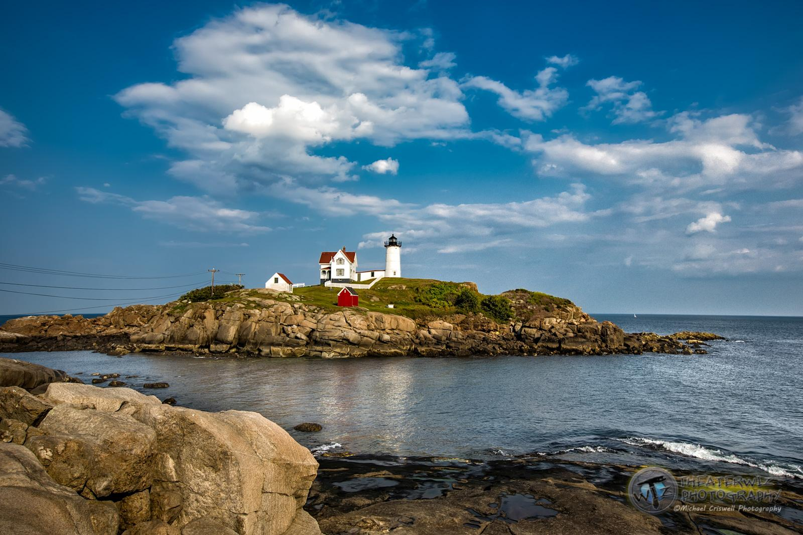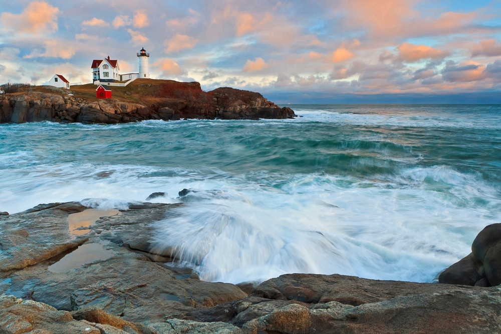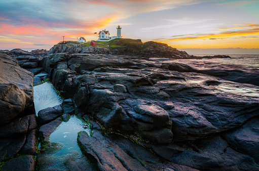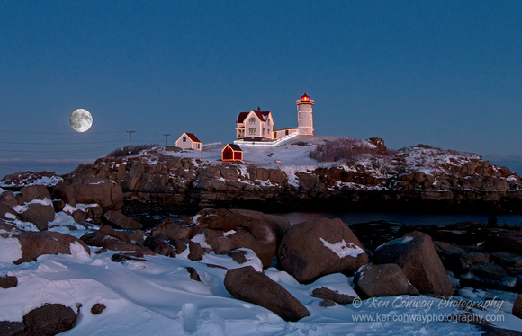
Mount Agamenticus is another well known landmark in York that attracts tourists and its own residence like me. I love coming here with my friends for short hikes, picnics, sunsets, etc.
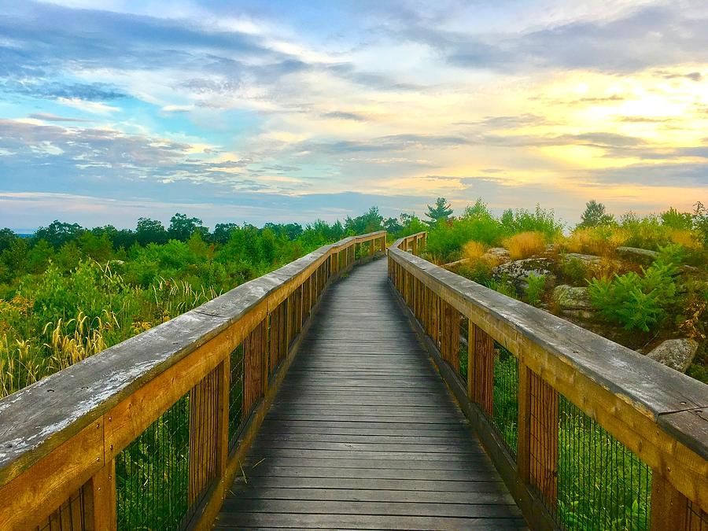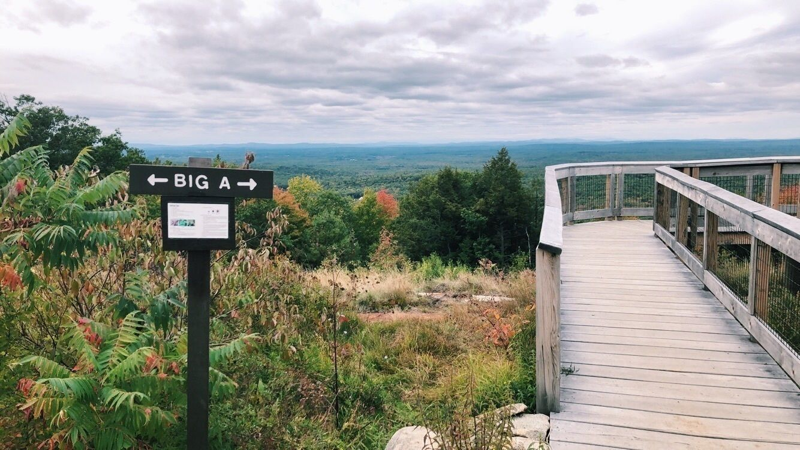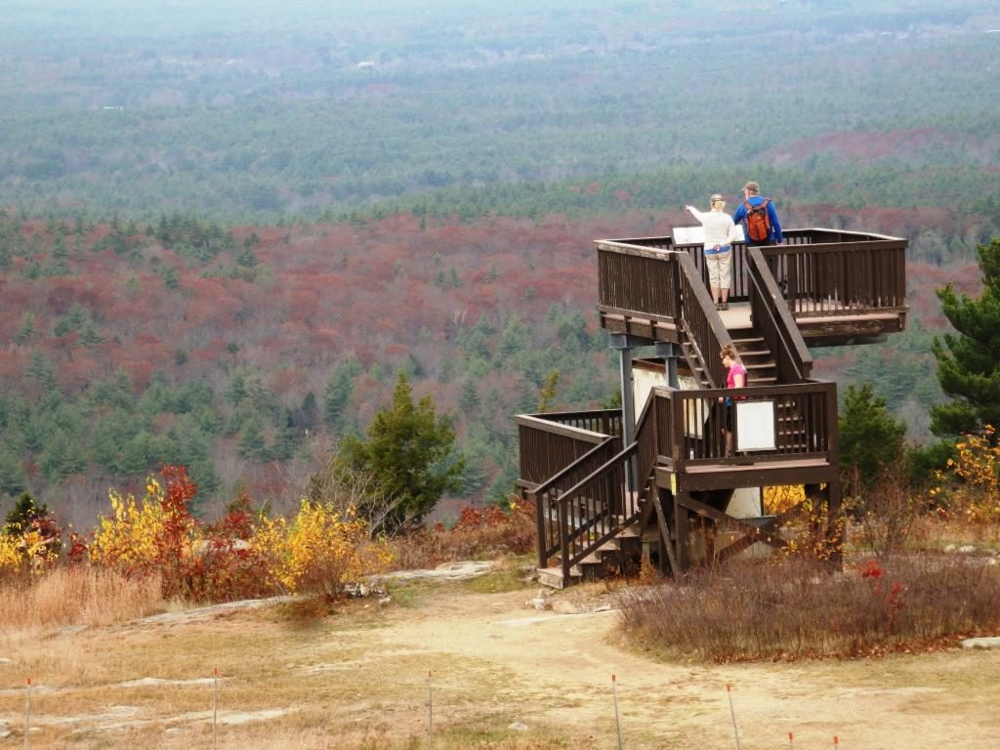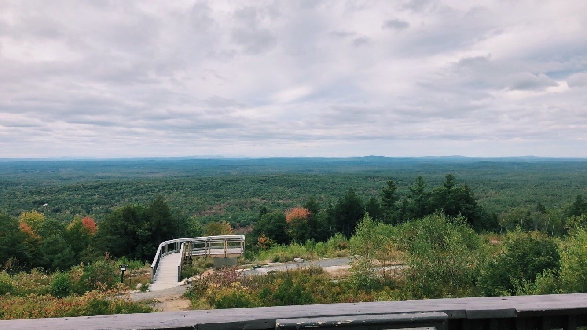
Another cool place in York is called the Wiggly Bridge and is the worlds smallest suspension bridge! It connects a path called the fishermans walk to stedman woods a place I went for many walks and runs.
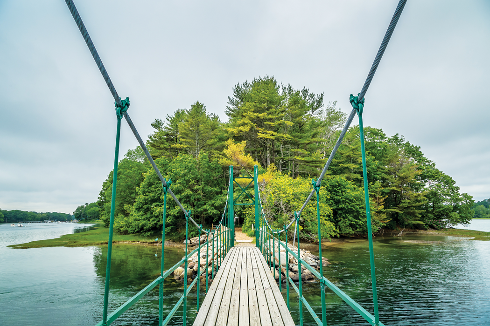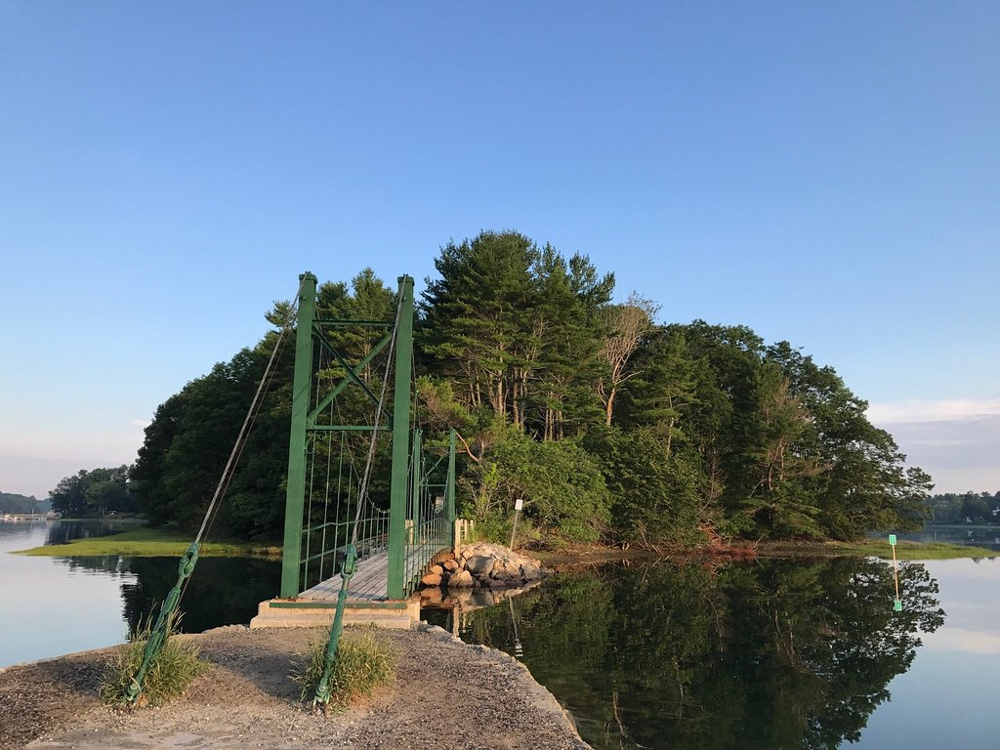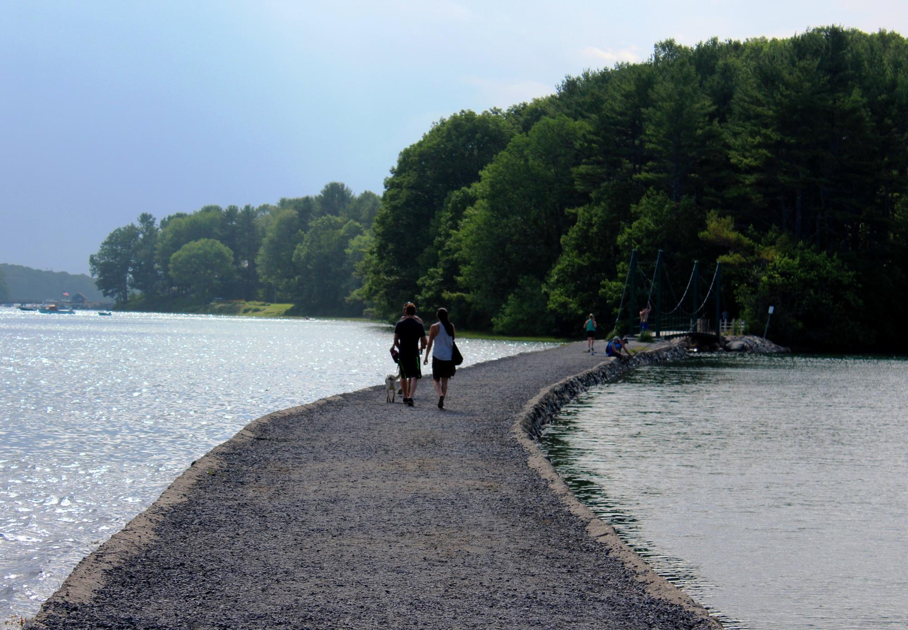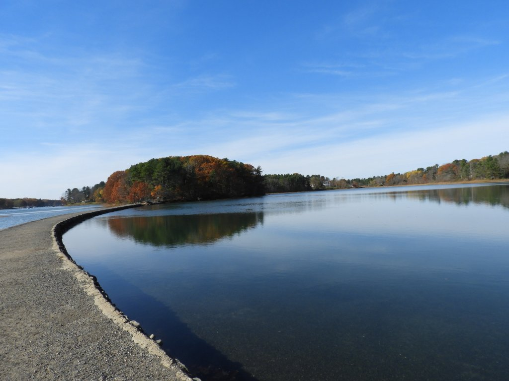
The main thing that brings in tourists is our beaches; Longsands Beach, Shortsands Beach, Harbor Beach, and Cape Neddick Beach. All of these beaches provide a different expirience depending on what you're looking for. Longsands is our longest beach hence the name and offers the most parking (although goodluck finding a spot on the weekends in the summer) and is lined with a few restaurants and many motels.
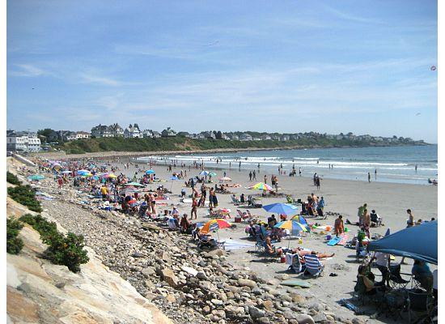
Shortsands is the most touristy beach as it has Yorks Wild Kingdom, shops, restaurants, hotels, basketball courts, a playground, an arcade, and many other attractions.
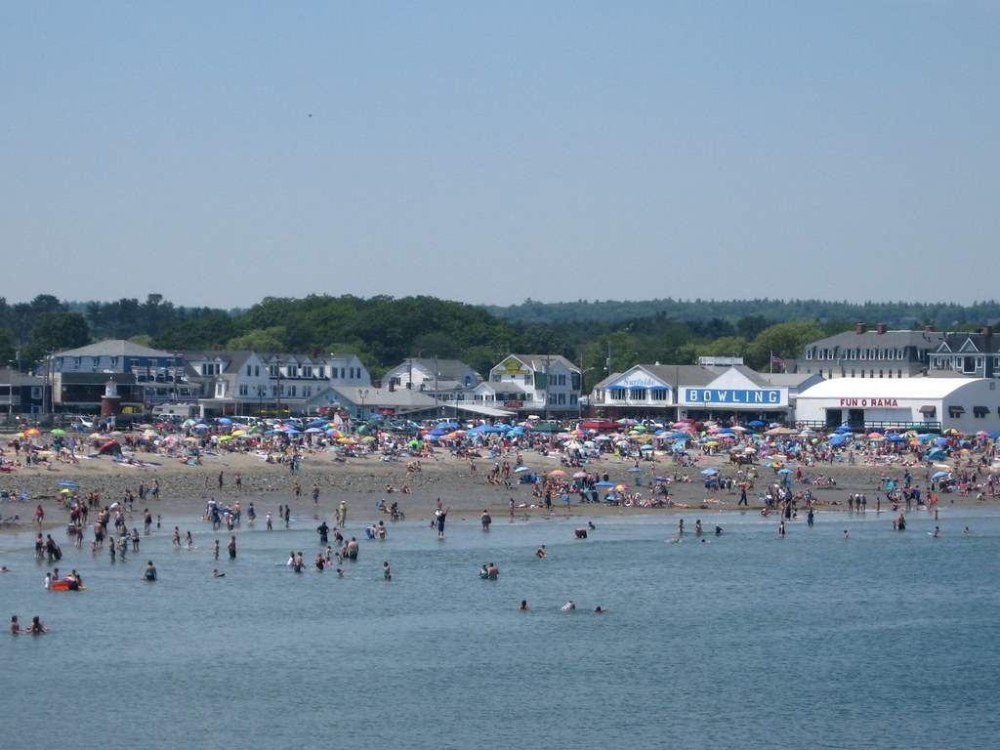
Harbor Beach is less well known and more of a family beach. You need a parking permit that only residents of the town can get so I enjoy the luxury of going to this beach. It also has what is called the Cliff Walk which is a nice walk along the side of the ocean that brings you to more amazing views.
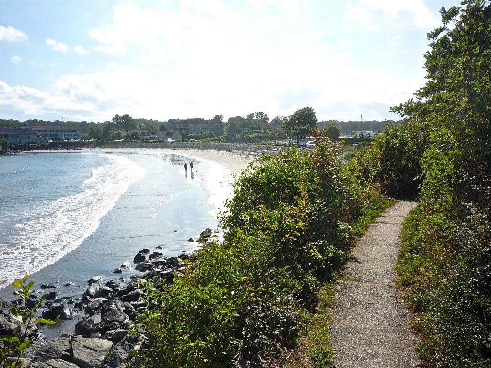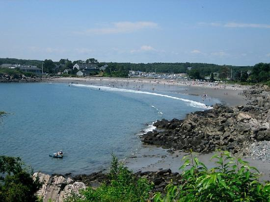
Cape Neddick Beach is my favorite beach because again you need a permit to park and it is the most private beach with beautiful greenery and clear water. It is also fun to go at high tide and jump off the Cape Neddick Bridge into the water.
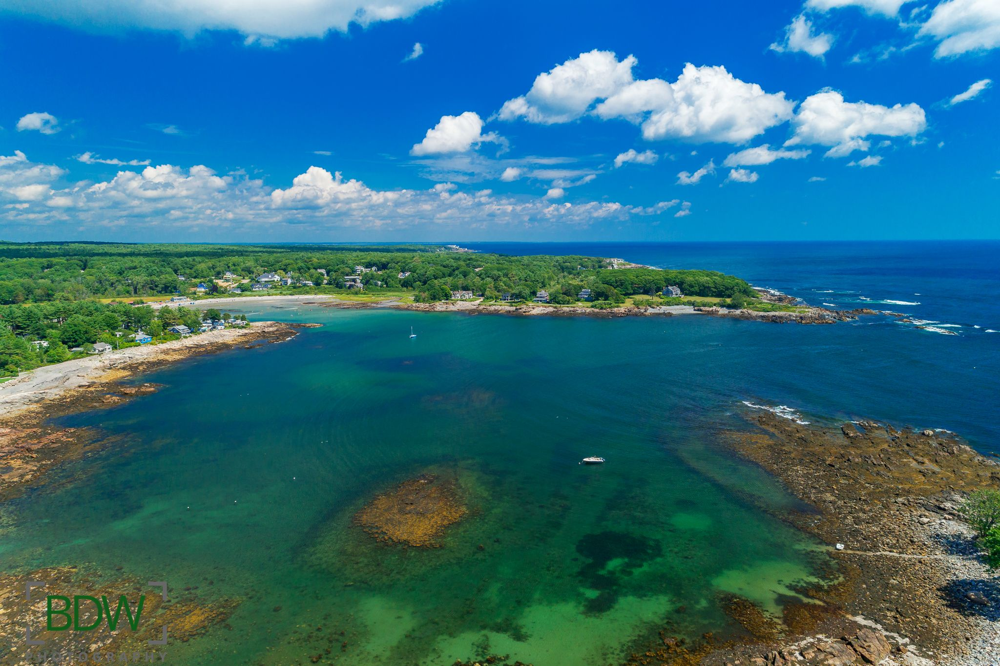
Homepage